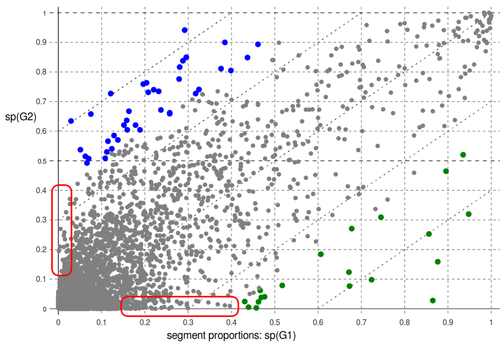

<!doctype html>
<html lang="en">
<head>
<meta charset="utf-8">
<!-- CUSTOMIZE THIS! -->
<title>Burrows' Zeta -- DHd2018</title>
<meta name="author" content="Christof Schöch">
<!-- END -->
<meta name="description" content="Slides">
<meta name="apple-mobile-web-app-capable" content="yes">
<meta name="apple-mobile-web-app-status-bar-style" content="black-translucent">
<meta name="viewport" content="width=device-width, initial-scale=1.0, maximum-scale=1.0, user-scalable=no, minimal-ui">
<link rel="stylesheet" href="css/reveal.css">
<link rel="stylesheet" href="css/theme/simple.css" id="theme">
<!-- Code syntax highlighting -->
<link rel="stylesheet" href="lib/css/zenburn.css">
<!-- Printing and PDF exports -->
<script>
var link = document.createElement( 'link' );
link.rel = 'stylesheet';
link.type = 'text/css';
link.href = window.location.search.match( /print-pdf/gi ) ? 'css/print/pdf.css' : 'css/print/paper.css';
document.getElementsByTagName( 'head' )[0].appendChild( link );
</script>
<!--[if lt IE 9]>
<script src="lib/js/html5shiv.js"></script>
<![endif]-->
</head>

<body>
<div class="reveal">
<div class="slides">
<section data-markdown="" data-separator="^\n---\n" data-separator-vertical="^\n--\n" data-charset="utf-8">
<script type="text/template">

<!-- THIS IS WHERE THE CONTENT GOES! -->
<!-- Any section element inside of this container is displayed as a slide -->

# Burrows Zeta:<br/>Varianten und Evaluation
<br/>
<hr/>
<br/>
Christof Schöch (Trier), Daniel Schlör,<br/>Albin Zehe, José Calvo Tello, Andreas Hotho (Würzburg)
<br/>
<br/>
**Jahrestagung des DHd-Verbands, Köln, 2018**
<br/>
<hr/>
<br/>
</img>&nbsp;&nbsp;&nbsp;&nbsp;&nbsp;&nbsp;</img>&nbsp;&nbsp;&nbsp;&nbsp;&nbsp;&nbsp;</img>&nbsp;&nbsp;&nbsp;&nbsp;&nbsp;&nbsp;</img>


---
# Überblick
<br/>
1. [Was sind Distinktivitätsmaße?](#/2)
2. [Was ist Zeta?](#/3)
3. [Varianten und Evaluation](#/4)
5. [Fazit](#/5)


---
# 1. Was sind Distinktivitätsmaße?

--
## Ausgangslage
<br/>
* Omnipräsenz der vergleichenden, kontrastierenden Analyse von Texten <!-- .element: class="fragment" data-fragment-index="1" --> 
* Maße der Distinktivität von Merkmalen ("keyness") <!-- .element: class="fragment" data-fragment-index="2" -->
* Standard-Tools, die sie implementieren: Antconc, WordCruncher, TXM, stylo, etc. <!-- .element: class="fragment" data-fragment-index="3" -->

--
## Was macht ein Merkmal distinktiv?
<br/>
* nicht nur absolute große Häufigkeit, <br/>sondern im Vergleich unerwartet große Häufigkeit<br/>(vgl. Funktionswörter) <!-- .element: class="fragment" data-fragment-index="1" -->
* nicht nur in kleinem Teil einer Textsammlung häufig, <br/>sondern
konsistent häufige Verwendung<br/>(vgl. Figurennamen) <!-- .element: class="fragment" data-fragment-index="2" -->

--
## Anforderungen an Distinktivitätsmaße
<br/>
* Häufigkeit gegenüber Distinktivität sinnvoll abwägen (Funktionswörter) <!-- .element: class="fragment" data-fragment-index="1" -->
* Distinktive Merkmale für die Textgruppe insgesamt (Namen) <!-- .element: class="fragment" data-fragment-index="2" -->
* Cut-off der Distinktivität erkennbar (Signifikanztest) <!-- .element: class="fragment" data-fragment-index="3" -->
* Interpretierbarkeit vs. Klassifikationsgüte <!-- .element: class="fragment" data-fragment-index="4" -->


--
## Gruppen von Distinktivitätsmaßen
<br/>
1. Erwartete vs. beobachtete Werte<br/>(bspw. log-likelihood-ratio) <!-- .element: class="fragment" data-fragment-index="1" -->
2. Gewichtung der Häufigkeiten (bspw. tf-idf) <!-- .element: class="fragment" data-fragment-index="2" -->
3. Hypothesentests zum Vergleich von Verteilungen<br/>(bspw. Welch’s t-Test, Wilcoxon-Test) <!-- .element: class="fragment" data-fragment-index="3" -->
4. Dispersionsmaße (bspw. deviation of proportions) <!-- .element: class="fragment" data-fragment-index="4" -->


---
# 2. Was ist Zeta?

--
## Zeta: Grundlage
<br/>
**dp<sub>i</sub>(Z) = df<sub>i</sub>(Z) / n(Z)**
<br/>
<br/>
* Z = Zielpartition, V = Vergleichspartition
* Jeder Text wird in Dokumente (Segmente) gleicher Länge geteilt
* dp (document proportion)= Anteil der Dokumente, in denen Merkmal *i* vorkommt

--
## Zeta: Berechnung
<br/>
**Zeta<sub>i</sub> = dp<sub>i</sub>(Z) - dp<sub>i</sub>(V)**
<br/>
<br/>
* dp<sub>i</sub> = Anteil der Dokumente einer Partition,<br/>in denen Merkmal *i* vorkommt
* Zeta: Subtraktion der Anteile in Z und V
* Berechnung für jedes Wort, absteigende Sortierung


--
## Zeta: Eigenschaften
<br/>
* Zeta liegt zwischen -1 und +1 (feste theoretische Spanne) <!-- .element: class="fragment" data-fragment-index="1" -->
* Kein inhärenter Schwellenwert der Distinktivität,<br/> kein inhärenter Signifikanztest <!-- .element: class="fragment" data-fragment-index="2" -->
* Zeta-Wert begrenzt durch höhere Dokument-Proportion <!-- .element: class="fragment" data-fragment-index="3" -->

--
## Zeta: Eigenschaften
<br/>
* Beruht auf dem Vergleich des Dispersionsgrades<!-- .element: class="fragment" data-fragment-index="1" -->
* Ungleichmäßig verteilte Merkmale (Figurennamen)<br/>bekommen keine hohe Zeta-Werte <!-- .element: class="fragment" data-fragment-index="2" -->
* Sehr weit verbreitete Merkmale (Funktionswörter)<br/>bekommen keine hohen Zeta-Werte <!-- .element: class="fragment" data-fragment-index="3" -->
* Bevorzugt Merkmale von mittlerer Häufigkeit<br/>(Inhaltswörter: Interpretierbarkeit) <!-- .element: class="fragment" data-fragment-index="4" -->


--
## Document proportions und Zeta
<p><a href="img/fig-1_docprops-und-zetascores_mit-pointer.png"></img></a></p>
<p>(Beispiel: Franz. Komödien und Tragödien)</p>


---
# 3. Varianten und Evaluation

--
## Varianten von Zeta
<br/>
1. Statt document-proportions: relative Häufigkeiten<!-- .element: class="fragment" data-fragment-index="1" -->
2. Statt Subtraktion der Werte: Division <!-- .element: class="fragment" data-fragment-index="2" -->
3. Statt unmodifizierte Werte: Logarithmus der Werte<!-- .element: class="fragment" data-fragment-index="3" -->
<br/>
Motivation: Gewünschte Effekte

--
## Acht Varianten
<br/>
</img>
<br/>
<p>\*sd0 = Burrows Zeta; sd2 = log2-Zeta</p>

<!--
|                 |   document  | proportions| | relative    |Häufigk.    |
|------------ ----|:-----------:|:----------:|-|:-----------:|:----------:|
|                 |  **normal** |  **log2**  | |  **normal** | **log2**   |
| **Subtraktion** |    sd0      |    sd2     | |    sr0      |    sr2     |
| **Division**    |    dd0      |    dd2     | |    dr0      |    dr2     |
-->


--
## Distinktive Worte (Tragödie)
<small>

|rang| sd0 (Burrows)|sd2 (log2)    |
|:--:|:------------:|:------------:|
|1|sang | trône |
|2|roi| romain |
|3|seigneur | sénat|
|4|gloire| diadème|
|5|crime| parricide|
|6|mort| peuple|
|7|dieux|immoler|
|8|prince|vengeur|
|9|horreur|sceptre|
|10|fureur|auguste|
|11|ennemi|attentat
|12|haine|tyran
|13|trône|camp|
|14|peuple|rome|
|15|vertu|murs|

</small>

--
## Effekt auf Distinktivitätswerte
<br/>
</img>
<br/>
<small>Théâtre classique (Tragödie): sd0 vs. sd2</small>

--
## Effekt auf Distinktivitätswerte
<br/>
</img>
<br/>
<small>Théâtre classique (Tragödie): sd0 vs. sd2</small>


--
## Ähnlichkeit der Varianten
</img>
<br/>
<small>Grundlage: Cluster Analyse der Zeta-Werte (500 Wörter, Ward-Verfahren)</small>


--
## Klassifikationstask
<br/>
</img>

<!--
|                 |    document | proportions| relative    |Häufigkeiten|
|-----------------|:-----------:|:----------:|:-----------:|:----------:|
|                 |  **normal** |  **log2**  |  **normal** | **log2**   |
| **subtraction** |     0.81    |   0.98     |   0.48      |  0.83      |
| **division**    |     0.79    |   0.85     |   0.75      | 0.79       |
-->

<br/>
<small>Klassifikationstask: Tragödie vs. Komödie;<br/>Linearer SVM-Klassifier mit 40 top-distinktiven Merkmalen,<br/> dreifache Cross-Validation; Baseline 0.49</small>


---
# Fazit

--
## Ergebnisse
<br/>
* Zeta: Nützliches Distinktivitätsmaß <!-- .element: class="fragment" data-fragment-index="1" -->
    * mathematisch sehr einfach
    * gut interpretierbare Ergebnisse
* Zeta-Varianten  <!-- .element: class="fragment" data-fragment-index="2" -->
    * Varianten mit relativen Häufigkeiten<br/>führen zu keiner Verbesserung
    * sd2 (log2-Zeta) verschiebt die Wortliste in interpretierbarer Weise 
    * sd2 erhöht die Klassifikationsgüte deutlich

--
## Nächste Schritte
<br/>
* Einfluss der Segmentlänge (mit Albin Zehe, Würzburg; Henning Gebhard, Trier) <!-- .element: class="fragment" data-fragment-index="1" -->
* Interpretierbarkeit je nach Variante; Zielkonflikt Distinktivität vs. Interpretierbarkeit? <!-- .element: class="fragment" data-fragment-index="2" -->
* Evaluation der Zeta-Varianten und etablierter Verfahren mit mehreren Verfahren und Textsammlungen <!-- .element: class="fragment" data-fragment-index="3" -->


--
## Vielen Dank!
<br/>
<br/>
**Literaturhinweise**
<small>

* Burrows, John F. (2007). "All the way through: testing for authorship in different frequency strata". _Literary and Linguistic Computing_, 22(1): 27-48.
* Hoover, David L. “Teasing out Authorship and Style with T-Tests and Zeta.” In _Digital Humanities Conference_. London, 2010. http://dh2010.cch.kcl.ac.uk/academic-programme/abstracts/papers/html/ab-658.html.
* Lijffijt, Jefrey et al. “Significance Testing of Word Frequencies in Corpora.” _Digital Scholarship in the Humanities_ 31, no. 2 (2014): 374–97. doi:10.1093/llc/fqu064.
* Oakes, Michael P. _Statistics for Corpus Linguistics_. Edinburgh: Edinburgh Univ. Press, 1998.
* Rayson, Paul, and R. Garside. “Comparing Corpora Using Frequency Profiling.” In _Proceedings of the Workshop on Comparing Corpora_, 1–6. Hong Kong: ACM, 2000.
* Schöch, Christof. „Zeta für die kontrastive Analyse literarischer Texte. Theorie, Implementierung, Fallstudie“, in: _Quantitative Verfahren in der Literaturwissenschaft_, ed. Andrea Albrecht et al. Berlin: de Gruyter (to appear).

<p><br/>With special thanks to pygal and reveal.js</p>


</small>


---
<br/>
<br/>
<br/>
## Danke!
<br/>
<br/>
<br/>
<br/>
<br/>
<hr/>
<p>Christof Schöch, 2017</p>
<p><a href="https://christofs.github.io/">christofs.github.io</a></p>
<p><a href="https://creativecommons.org/licenses/by/4.0/">CC-BY 4.0</a><br/></p>
<hr/>
<br/>
<br/>
</script>
</section>


<!-- DON'T TOUCH UNLESS YOU KNOW WHAT YOU'RE DOING :-) -->
</div>
<script src="lib/js/head.min.js"></script>
<script src="js/reveal.js"></script>
<script>
// Full list of configuration options available at:
// https://github.com/hakimel/reveal.js#configuration
Reveal.initialize({
    controls: true,
    progress: true,
    slideNumber: true,
    history: true,
    center: true,
    transition: 'slide', // none/fade/slide/convex/concave/zoom
    // Optional reveal.js plugins
    dependencies: [
        { src: 'lib/js/classList.js', condition: function() { return !document.body.classList; } },
        { src: 'plugin/markdown/marked.js', condition: function() { return !!document.querySelector( '[data-markdown]' ); } },
        { src: 'plugin/markdown/markdown.js', condition: function() { return !!document.querySelector( '[data-markdown]' ); } },
        { src: 'plugin/highlight/highlight.js', async: true, callback: function() { hljs.initHighlightingOnLoad(); } },
        { src: 'plugin/zoom-js/zoom.js', async: true },
        { src: 'plugin/notes/notes.js', async: true }
        ]
    });
Reveal.configure({ slideNumber: 'c' });
</script>
</body>
</html>
